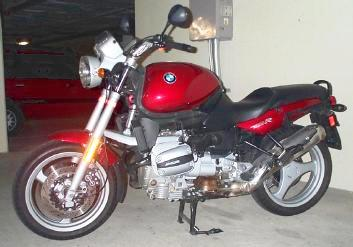

Some impressions of the R850
While they were still fresh in my mind, I wanted to make some
comparisons between the '96 R850 that I just returned, and my normal
bike, the R65 LS.
(The background: I had my R65 in for electrical service at Cascade,
and they loaned me this thing for Saturday evening through Tuesday
afternoon. Also, see the picture collection.)
Things I didn't like about the R850:
- Riding position - I'm too tall for that bike (seat as high
as it'll go) I guess. My legs were folded up uncomfortably to get
my feet on the pegs, and I didn't feel like I was in total control.
My knees also went past the indents on the (freakin' huge) gas tank.
- Twitchy throttle - I had a terrible time using this throttle.
Unless I was paying most of my attention to throttle control, I'd jerk
back and forth over bumps, while going slowly, and any time I was
accelerating lightly (like in slow traffic).
- The turn-signal system - Having commonly-used controls on
the right hand was difficult to get used to, and contributed to the
twitchy throttle -- but I suspect one would get used to this (and it was
better by the time I turned the bike back in). Although I don't much
like the "you have to push it back to center to cancel" turn signals
I've got on the R65, they're better than the R850 if only due to it all
being on the left hand.
- The suspension - Yes, I know it's a much "better" design,
but that bike felt really squirrely at low speeds. It followed
every crack in the road, and gave me a distinct feeling of unease. I'm
pretty sure the tires were properly inflated (although I admit I didn't
check).
- The gas tank - The tank on this machine rides really high,
and is really wide. Due to the way you have to sit on the bike, the
tank comes up to mid-chest level -- this would make it difficult to
reasonably use a tank bag, for instance. Two comments which describe it
really well: "I feel like I'm way too intimate with this bike!"
and "It's a real ball-buster if you have to hit the brakes hard..." On
top of all that, it only holds 5.5 gallons, which is .3 gallons
less than my R65's tank, for a ridiculous increase in apparent
size.
- The appearance - I guess I'm living life 15 years ago, but I
really don't like the voluptuous line of this motorcycle. It's
way too curvy for me, with bulbous protrusions and a seat that's
sculpted far too much. The overall difference in height between the
highest part of the bike and the lowest part of the bike (at least along
the top line) is too much, and it should all be flattened out.
Things I did like about the R850:
- The clutch - It was very precise-feeling, and had a very
sharp uptake. This did, however, contribute to some fairly jerky
shifting on my part.
- The gearbox - It was also much more precise-feeling than the
R65's setup, and I never once found a false neutral. Both these things
can partially be attributed to the 14 year differential in age between
the bikes.
- The engine noise level - The R850, being a second (third?)
generation Boxer engine, was much quieter than the R65. I think
this was partially better mufflers, and partially different engine
design.
- The avaliable power - Naturally, being a much newer engine,
with 200 more cc's to play with, it developed more power. Getting on
the R65 again, it felt kind of anemic, which it never had before (and
hopefully I'll forget how the R850 feels before too long on this count).
- The suspension - (I know, it's in both lists) The suspension
was quite nice at speed, and when stopping. The elimination of brake
dive was complete, and felt very secure.
- Starting - This bike was exceedingly easy to start, just
blip the starter once or twice and it was humming along - never felt any
need to rev the engine to keep it running. One of the advantages of
fuel injection, I guess.
Overall, I think I wouldn't choose to buy an R850 in the future.
The riding position was a major gripe for me, and would result in much
less enjoyment while riding. While the increased power and quieter
engine were nice, they wouldn't make up for how uncomfortable I'd be
sitting on the thing. This is an entirely subjective opinion, and
shouldn't be looked upon as an objective answer to whether you, the
reader, should buy this model of motorcycle. If it had a similar
seating position to my R65, I would probably have an entirely different
opinion on the bike.
Created by Ian Johnston. Questions? Please mail me.
Back to the R65 page